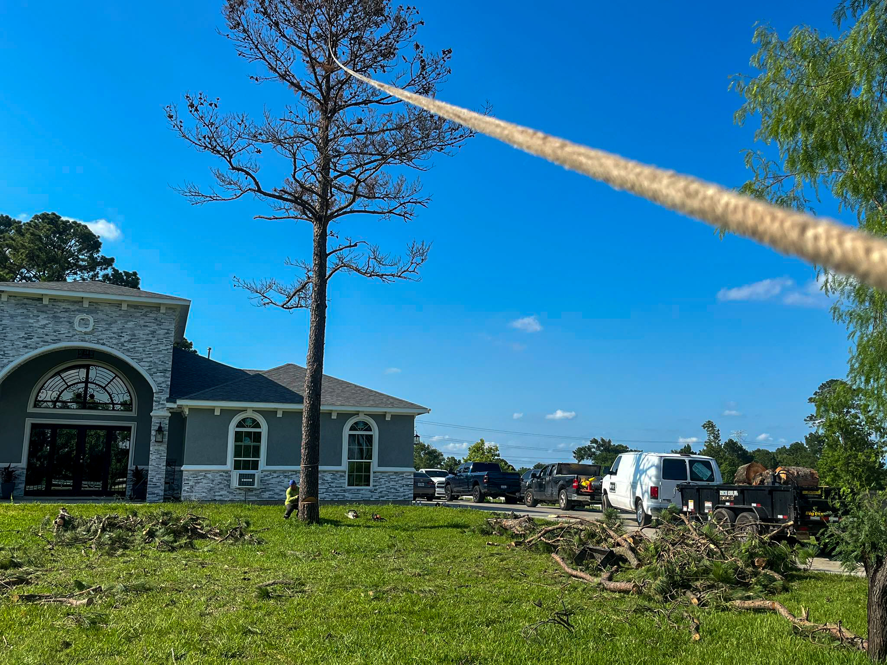
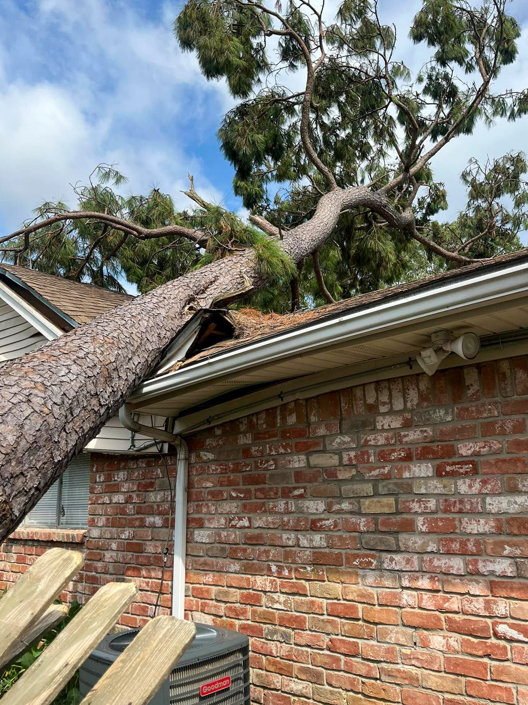
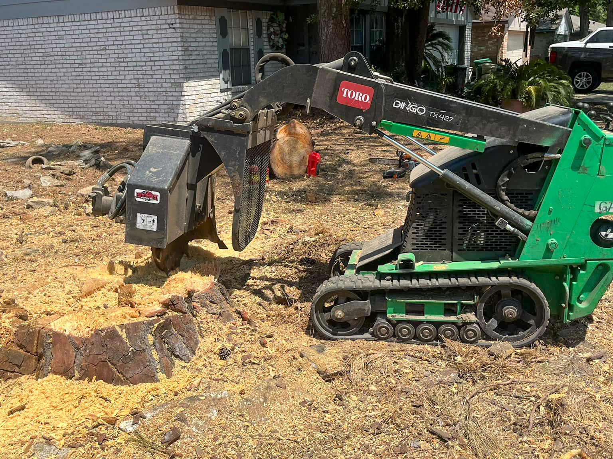
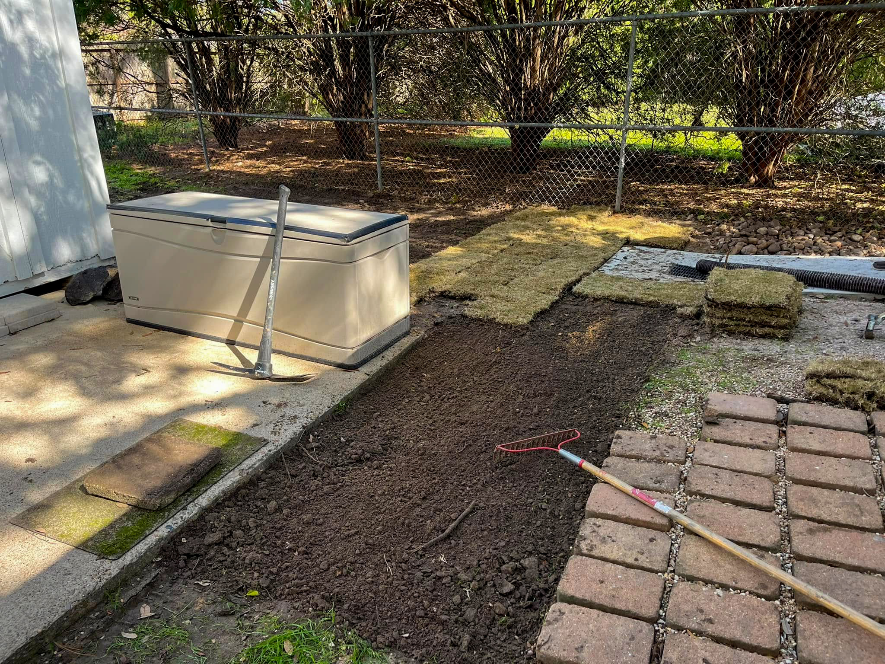
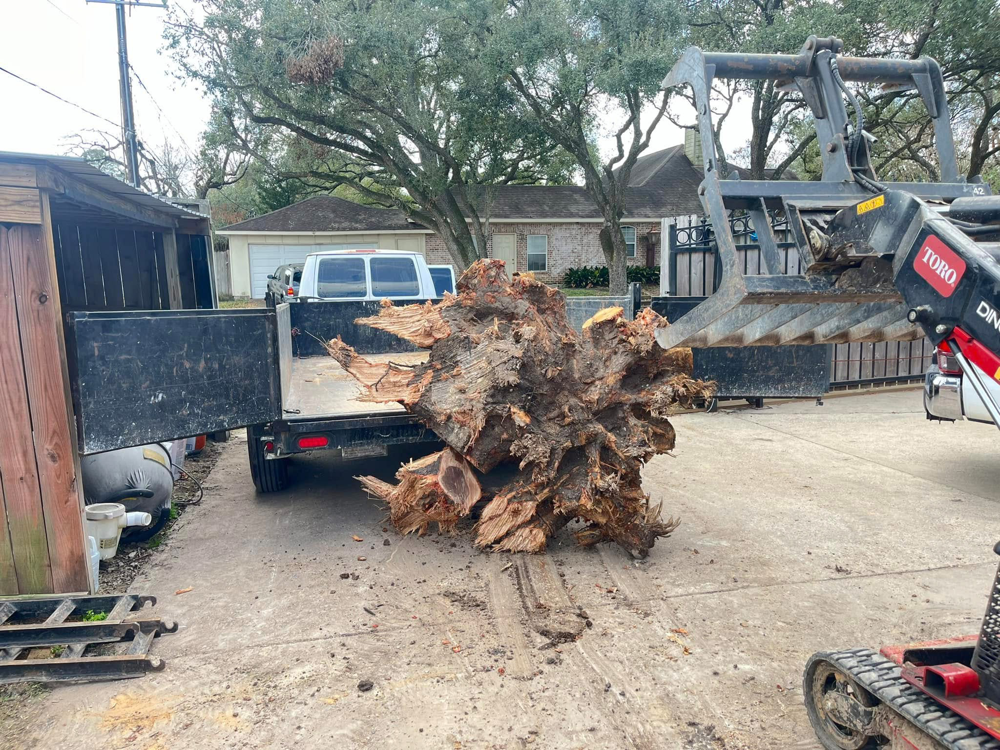
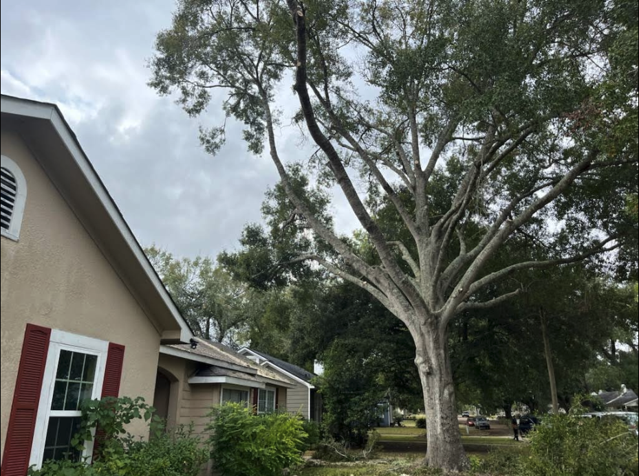
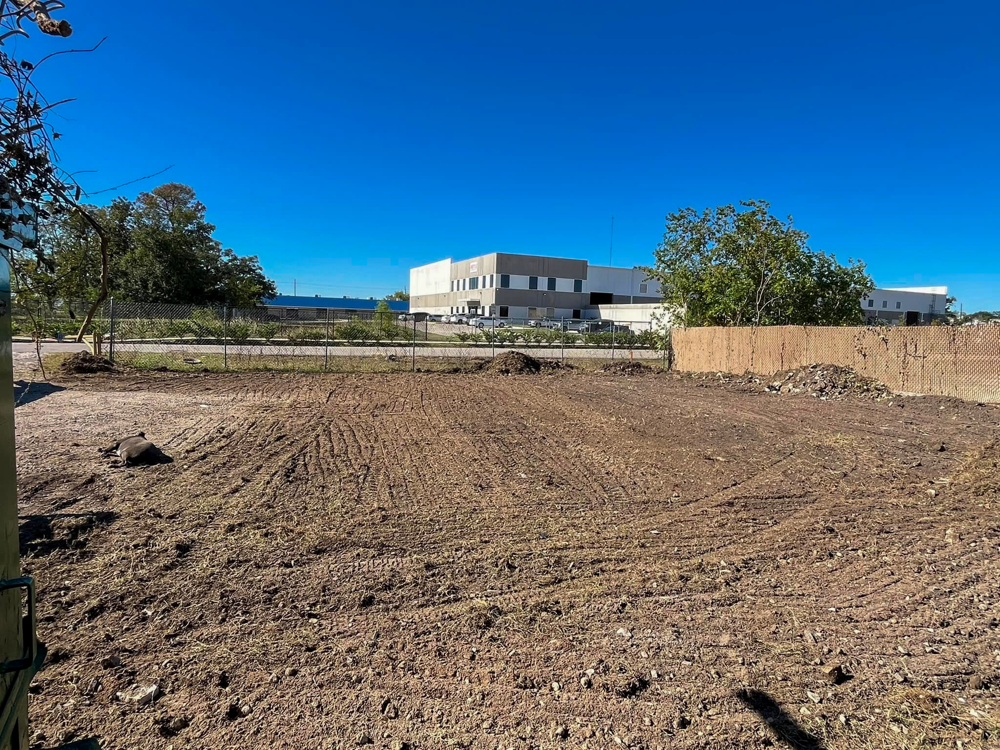
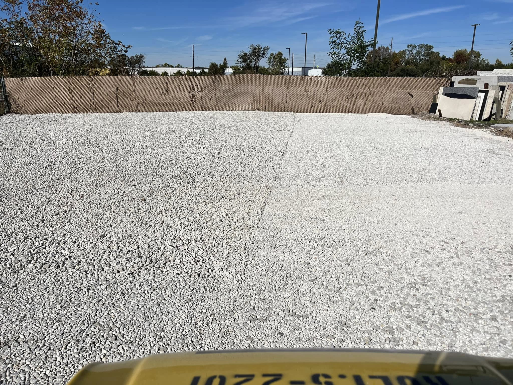
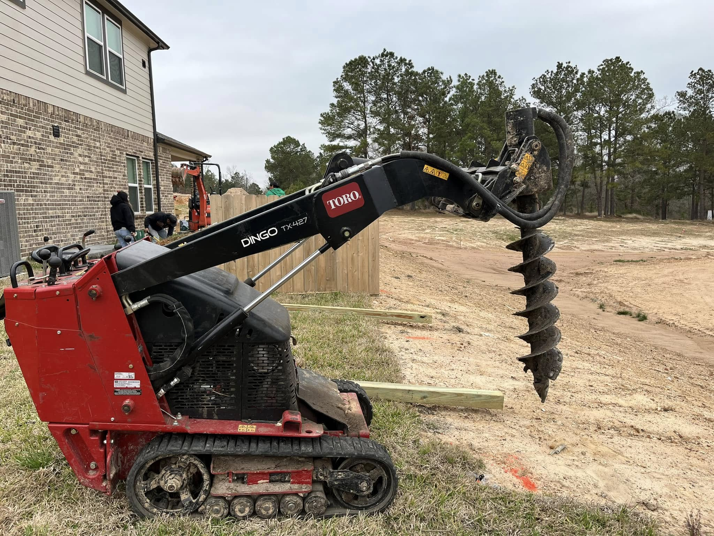

Houston's Trusted Tree-Removal & Cleanup Experts
Facundo Trees — Houston's Trusted Tree Removal & Cleanup Experts
Based in NE Houston — same-day service for Kingwood, Humble, Porter, New Caney, Atascocita, Cleveland, Crosby & all of Greater Houston.
How It Works
Get a Quote
Call or text us and we'll get you a free estimate.
Approve & Schedule
Choose a date that fits your calendar.
Relax
Our crew arrives on time, completes the job safely, and cleans up every twig.
Gallery






Safe, Skilled Tree Service
Removing a mature oak or palm isn't a DIY project — it's a precision operation that protects people, property, and surrounding landscape. Facundo Trees deploys insured crews, bucket trucks, rigging gear, and 20‑inch chippers to dismantle hazardous or unwanted trees of any size. We plan every cut, lower large sections with ropes to avoid lawn damage, and finish with thorough clean‑up so your yard looks better than we found it. Whether you need selective removal to open up sunlight or full clearance before construction, expect upfront pricing, same‑week scheduling, and courteous pros who respect your time. One call and the problem tree is gone.
- Tree Removal
- Tree Trimming
- Stump Grinding
24/7 Emergency & Storm‑Damage Tree Cleanup
Houston weather can flip from calm to chaotic in minutes, leaving cracked trunks, tangled power lines, and debris blocking driveways. Facundo Trees keeps a standby crew on call 24/7 with cranes, chainsaws, and protective gear ready for rapid deployment after hurricanes, thunderstorms, or accident scenes. We secure the site, clear fallen limbs from roofs and vehicles, and cut unstable trees before they drop. All material is chipped or hauled to approved recycling facilities, so you're not stuck with a messy curb pile. Most jobs are completed within hours of approval, helping you restore safety and qualify for timely insurance claims.
Call Now — We're 24/7Stump Grinding & Complete Root Removal
An old stump is more than an eyesore — it attracts pests, harbors disease, and trips up lawn mowers. Facundo Trees uses self‑propelled grinders that fit through a 36‑inch gate yet pack the torque to pulverize hardwood stumps well below grade. After grinding, we rake the area, backfill with shavings or topsoil, and can even lay fresh sod so the scar disappears the same day. Need everything gone? Our crew can excavate the root ball and haul debris off‑site to leave a clean slate for landscaping or construction. Quick estimates, punctual arrival, and zero hidden fees make reclaiming your yard simple. Every job is fully insured for your peace of mind.
Get a Stump QuotePrecision Tree Trimming & Pruning
Regular trimming does more than keep branches out of the neighbor's driveway — it improves tree health, shape, and wind resistance. Our climbers and ground crew follow ANSI A300 best practices to perform crown thinning, reduction, structural pruning, and seasonal storm‑prep cuts tailored to each species. We remove deadwood, balance weight, and lift low limbs for better clearance while preserving the natural silhouette you love. Debris is chipped on‑site for mulch or hauled away, leaving your property tidy and safe. Schedule one‑time aesthetic shaping or enroll in an annual maintenance plan to keep your Houston canopy gorgeous, healthy, and hurricane‑ready. Transparent quotes and photo updates mean you're never guessing what was done or why.
Get a Trimming QuoteLot & Land Clearing for Construction and Curb Appeal
Whether you're prepping a vacant lot for a new build or reclaiming an overgrown backyard, Facundo Trees has the machines and manpower to strip it clean. Our excavators and skid-steers knock down brush, pull stumps, and grade the surface — then we chip or haul every bit of debris. We work to the survey stakes you provide, preserve the trees you want, and leave a level, ready-to-build site. From single lots to multi-acre parcels, expect a fully insured crew, transparent per-job pricing, and a spotless finished grade.
Sod Installation
Transform bare soil into a lush, play-ready lawn in a single day. We deliver fresh-cut St. Augustine, Bermuda, or Zoysia sod, laser-grade the base for proper drainage, lay staggered seams for instant coverage, and power-roll for root-to-soil contact. Every install includes starter fertilizer and a 14-day watering guide.
Limestone & Gravel Delivery & Spreading
Road-base, crushed limestone, pea gravel, or decomposed granite by the cubic yard — driveways, garden paths, French-drain trenches, or shed pads. Our skid-steer spreads and levels to a smooth, compact, professional finish.
Auger Hole Drilling
Skid-steer-mounted augers cut clean, plumb bores from 6″ to 18″ wide and up to 4 ft deep in Houston's tough clay — ideal for fence posts, deck footings, and tree planting. We mark utilities, drill, and haul spoils the same day.



Service Area
Facundo Trees serves homeowners, property managers, and builders across Greater Houston, including The Woodlands, Spring, Cypress, Tomball, Humble, Kingwood, Atascocita, Katy, Sugar Land, Missouri City, Richmond, Rosenberg, Pearland, Friendswood, League City, Clear Lake, Pasadena, Deer Park, La Porte, Baytown, Bellaire, West University Place, Jersey Village, and nearby communities throughout Harris, Fort Bend, and Montgomery counties. If your neighborhood isn't listed, call — we're probably already working just down the street.
About Us
Facundo Trees is a locally owned, Houston-proud tree service founded by Roger Facundo, who has spent the past decade mastering the art of safe, efficient tree work in Gulf-Coast conditions. Our mission is simple: protect people and property while preserving Houston's urban canopy. Every project starts with a free, honest assessment and ends with a spotless job site. We're fully insured, committed to same- or next-day response, and on call 24/7 for storm emergencies.
Roger built Facundo Trees on old-school values — show up on time, do what you say, treat each customer's yard like your own, and leave no mess behind. It's why homeowners, HOAs, and builders across Harris, Fort Bend, and Montgomery counties trust us year after year.
When you choose Facundo Trees, you get more than a service — you gain a neighbor who cares about safety, curb appeal, and your peace of mind. Call or text today and experience tree care the way it should be.
Call or Text Roger$2 million general liability
On call after any storm
Fast scheduling, no runaround
Upfront pricing every time
Frequently Asked Questions
Do I need a permit to remove a tree on my property in Houston?
Most residential trees in Houston do not require a city permit, but protected “corridor” or heritage trees can. We'll confirm during the quote — if a permit is needed, we'll handle the paperwork for you at no extra charge.
Are you insured?
Absolutely. Facundo Trees carries $2 million in general liability. Proof of coverage is available on request.
How is the price for tree removal calculated?
We factor in tree size, species, accessibility (e.g., backyard vs. curb), proximity to structures or power lines, and disposal volume. Call us for a free on-site estimate — no surprise fees.
What happens to the debris and stump?
Standard removal includes complete limb clean-up, trunk haul-off, and thorough raking. Stump grinding below grade is optional and priced separately; you can keep the mulch or have us haul it away.
How soon can you schedule my job — especially after a storm?
During normal conditions we can usually slot you within 1 business day. After major storms we triage by hazard level and often run extra crews to keep wait times under a week. Ask about our priority service to be first in line.